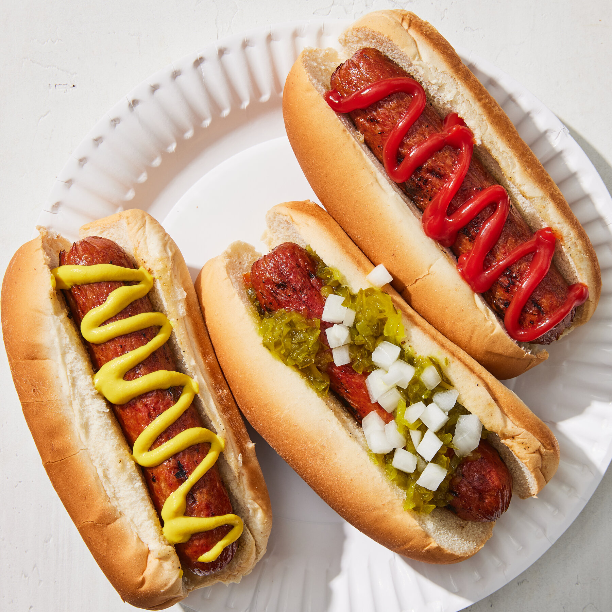

How to make Hot Dogs

Description
We will be making a very simple yet delicious New York style hot Dogs
with that fresh taste of off the boiler and into the bun style and speed, as
for what will need:
Ingredients
- Sausage
- Buns
- Ketchup
- Mayo
- Mustard
Steps
- Prep:first we will boil the sausage and the bun with in a steamer method for approx
of 15 minutes.
- Build: second of all we will remove our food from the steamer and set it up, placing
the bun on the plate and the sausage on the bun.
- Sauce her up:Than we will be applying out fav sauces on to the HotDogs adding to taste and
preference for the amount of the sauces.
- Eat her up:Now move her to the lip and take a big juicy bite of your work, and enjoy.
Home